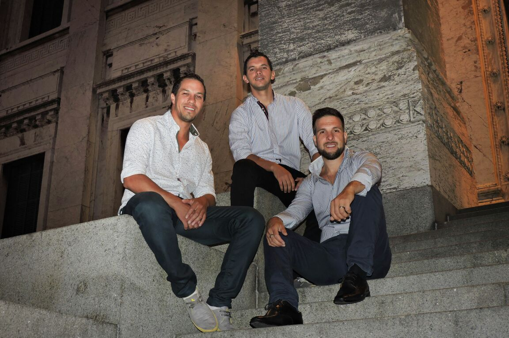
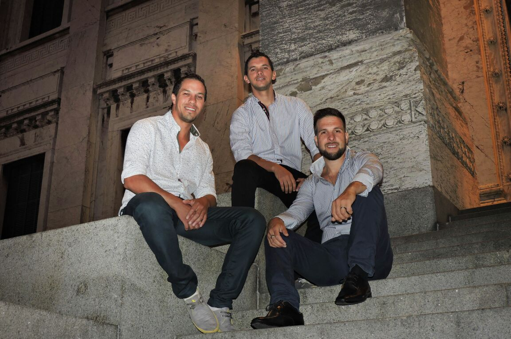

Nuestra historia
Matices actualmente está integrado por 3 primos hermanos: Diego Villar, Christian Villar y Gonzalo Villar, quien se incorpora en enero de 2017 cuando Maycol Brunetti decide dejar el grupo.
Matices surge en nuestro país a fines del año 2000, renovando el canto popular uruguayo y valorando
la poesía, el amor y el romanticismo, con profundo sentido nacional y latinoamericano.
Las raíces folclóricas, y el amor por el canto las aportan Diego y Christian Villar que
son primos, y las traen desde la cuna, pues sus familias arachanas son cantoras y varios son
autores de hermosas poesías que han sido musicalizadas. La primera conformación de Matices fue
con Maycol Brunetti, un amigo del liceo, que junto a ellos descubre su gusto por el canto. Los
3, un día de agosto, actúan en un shopping de Montevideo, teniendo una importante repercusión
que genera el nacimiento de Matices. Poco a poco se fueron profesionalizando y logrando su identidad,
creando sus propios temas, armando su banda y logrando un merecido lugar dentro del canto popular
uruguayo que los llevaría a recorrer, año tras año, todo el país y también a “cruzar el
charco” en varias oportunidades. Fueron revelación en el primer festival que participaron:
el “de los Parques de Santa Teresa” en enero 2001 y al mes siguiente tercer premio
en el “Festival de Durazno” uno de los más relevantes del país. En abril ya se presentan
en el Prado de Montevideo, el evento más importante de exposición, doma, danza y folclore al
cual concurren todos los años. En junio producen y presentan en tango Salón Chiquet de Montevideo
un espectáculo que denominan “Matices y sus raíces” en el cual recrean su cuna cantora
actuando junto a sus padres y tíos. Y en diciembre realizan su primer recital en la Sala Zitarrosa.
Así continúan presentándose en cada escenario de festivales, teatros, clubes, exposiciones, etc.
entregando su canto, su poesía, su música. Otros datos importantes de su carrera son: en 2002
graban su primer cd llamado “Mi estrella fugaz” con la dirección y producción de
Heber Rodríguez. En 2003 editan el primer video clip con el tema “Mi Mundo”. En carnaval
de 2004 incursionando en un estilo diferente, integran la revista “Éxtasis” que obtendría
el primer premio en la categoría. En 2006 se edita el video clip con el tema “Que
no daría yo” grabado en vivo en la Sala Zitarrosa. En 2008 se destaca la participación
del trío en el musical “Mi Bella Dama” bajo la dirección de Omar Varela, alcanzando
este espectáculo el “Florencio” a mejor musical. En julio son invitados a participar,
junto a otros artistas y personalidades, del homenaje a Pablo Estramín e inauguración del escenario
que llevaría su nombre en Paso de las Duranas. En 2009 tienen el gran honor de grabar con José
Carbajal “El Sabalero” el tema “La Mama Juana” del autor Higinio Mena;
que iría en el próximo trabajo discográfico “Sigue mi camino”, este cd conto con
la dirección y producción de Martin Brizolara. En diciembre de 2010 cumplieron sus primeros 10
años de actividad ininterrumpida que festejaron en mayo de 2011 en la Sala Zitarrosa grabando
aquí, en vivo, el primer DVD llamado “Matices 10 años”.
Matices ha crecido en edad, en trabajo y en profesionalismo. Los músicos que acompañan a Matices aportan siempre un gran soporte para el lucimiento de las buenas y afinadas voces y su particular modo de cantar, basado en cuidadosos arreglos vocales hechos por ellos mismos. Sin duda es una nueva generación del canto nacional.